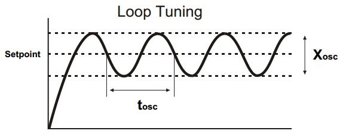

Hey there!
So far, we have learned how to make simple robots, primarily using Arduino.
From this blog, we will be starting the next phase of the journey that we began five weeks ago.
We shall talk about things in a much broader sense.
Things that are required in robotics applications everywhere, and not confined to a single project.
This week, we will learn about the PID controller. Before we jump into that, there are a few terms to know.
A control system is a set of devices and programs that control other devices or systems. They regulate the output of the devices that they control. These are the ones that control the movement of a robot or, more precisely, ensure that the various parts of a robot(say the limbs of a humanoid bot) work as they should and don’t decide to start a coup.
This is the desired value of the system that the control system controls. For example, the room temperature that you set in a thermostat.
It is the measured value of the parameter that the control system tries to control. The Control System’s goal is to get this to equal the Set Point.
This is the difference between the setpoint and the process variable. It tells the control system how much work is left to be done to reach the desired state.
Now that the definitions are out of the way we can see how control systems work. Can you think of ways that they can do this? Is it always necessary for a control system to be bothered about the terms mentioned earlier? Can they make do without those? It might help if you imagined the control system to be the monarch and the devices that it controls as the subjects.
When a control system instructs a device what to do, it can do so in two ways. One such way is to give it instructions, without worrying about whether they have been carried out or not, nor the extent to which it has been carried out. This is an open loop system. It is similar to a teacher or friend that goes on and on about something, without bothering to see whether the other person understands what they are talking about or is even interested in it. Whether or not this is useful depends more on the listener, rather than the person talking. As you might know from experience, this is often not very helpful. Can you think of an example of an open loop system in your daily life? They are quite common
This is more like the smart, cool teacher we’ve all had. One that looks to the students to get feedback on how well the topic being explained is understood, and takes an active interest in the understanding of the listener. Similarly, the closed loop system takes the feedback from the device it is controlling. For example, say there is a controller to control the speed with which a wheel rotates. It gives instructions to the motor by controlling how much power it must supply to them. This works as intended on a smooth, flat road. The problem arises when it gets stuck in a ditch. The wheel refuses to move at all. An open loop system would not take this into consideration and just give the same power it was giving it earlier. Meanwhile, a closed loop system detects this and tells the motor to give the wheel more power to get it out of the ditch.
Once, it is out of the ditch and back on a flat road, the system tells it to go back to the initial state. How does it do this? The system takes the controller signals as input and generates the output/process variable of the system and the difference or error is passed to the controller. These outputs are measured by sensors and estimators are used to fuse measurements into accurate output estimates. The output estimates are compared to the desired or reference output variables, i.e., to the setpoint.
As you can see, a closed loop system is much more efficient but requires more computational power and an additional input from a Sensor.
If you happen to google “PID Controller'' this is what you will find: A PID controller is an instrument used in industrial control applications to regulate temperature, flow, pressure, speed, and other process variables. PID (proportional integral derivative) controllers use a control loop feedback mechanism to control process variables and are the most accurate and stable controller. Quite a mouthful! Let’s break it down. The PID controller stands for the Proportional-Integral-Derivative controller. It takes these three forms of the error for the process variable and creates a closed loop system. As for a controller, it can be thought of as a mathematical algorithm that sends an output to control the process variable so that the error is minimised and the process variable approaches the setpoint. Let us say that a bot was asked to move 10m forward in a given time interval, but it actually moved 3m backward(a rebellious one that). So the error term, e will be 10 - (-3) = 13m. The controller notices this and instructs the motor to produce more torque. How much more torque? It decides this in three different parts. Yes, you might have guessed what they are - the proportional, the integral and the derivative.
If you would like to implement your own PID controller and tweak it around to see the effect of the three terms, you can do so with the help of Simulink, a programming environment that helps you create and simulate systems. For this purpose, you won’t need to know about Simulink beforehand, the basics will be explained here.
In order to see the graph plotted, double click on the scope block. Then click ‘Run’. You’re all set. Go ahead and try to see play around with it to see how the three terms affect the output of the system.
Let us say there is the bot mentioned above and the controller controls(like it should) the speed of the bot (by controlling the speed of the motors). There is a goal position, 10m away for the bot to reach and the controller controls the speed of the bot. We shall also take the position of the bot is 0 and that of the goal as 10. Now the error, as previously mentioned, will be
The proportional term takes this error and multiplies it by an arbitrary constant, Kp. So now the speed of the bot will be Kp*e. This handles the speed quite well. So, when you are far away from the goal, your speed will be high, moving you toward the goal quickly and slow down as you approach the goal. Much better than the open loop system, with just a constant speed, right?
* in all the graphs,the amplitude is taken to be the ratio current position/expected position
But, like with all good things, this, too, has limitations. Two limitations, in fact, with different outcomes. Take a look at the graph and try to figure out what they could be. The first one arises when Kp is very small. When the bot is quite close to the goal, the proportional term becomes very very small and keeps getting smaller. Hence, the speed is also extremely low and the bot takes forever to reach the goal.
At the other extreme, if Kp is too high, the bot moves quite fast, even when it is close to the goal. And in real life, as the bot cannot instantaneously stop, it overshoots the goal. The error now becomes negative, and the bot moves back towards the goal. As it comes close, it once again overshoots, but now towards the positive side. This keeps repeating and causes an oscillatory motion.
Go ahead and simulate these limitations in Simulink and try to eliminate the error by changing the values of Kp and Kd.
The integral term arrives to save the proportional term from the first danger, when Kp is too small and the bot takes infinite time to reach the goal. The integral term takes into account the accumulated error over time. So, even if the error is constant, it is all added up. You may say that, as the error is small and ever decreasing, shouldn’t this term be quite small too? Not necessarily. This accumulated error is multiplied by another arbitrary constant, called the integral gain(Ki), which can be made as large(or as small) as you want it to be. Here, the equation for the integrated error is
The integral term becomes
This makes the speed of the bot
The derivative term comes to the rescue when the proportional term causes the never-ending oscillations of the system. It senses the rate at which the bot is approaching the goal and does its thing accordingly. This means that, as the bot approaches the goal at a high speed(which is what causes the overshoot), the derivative term takes on a negative value and slows the speed down. It acts as the sensible friend that prevents you from impulsively getting into a fight(and getting thrashed up in the process) with the strongest kid in school. The equation for this term is
Hence, the derivative term becomes
Using only the proportional and derivative terms
Putting all the three terms together, the speed of the bot will become
In a way, we could imagine the velocity of the bot to be Ebenezer Scrooge from ‘A Christmas Carol’ by Charles Dickens. It takes the help of three ghosts, the Ghost of Christmas Past (the integral term, that takes the past errors into its calculation), the Ghost of Christmas Present (the proportional term, that is only concerned with the current error) and the Ghost of Christmas Yet To Come (the derivative term, that realizes that the bot is going to reach the goal soon and effectively slows it down) to become a better version of itself.
Now that we understand the three terms in a PID controller and what they do, we must set the constants (also known as gains), Kp, Ki and Kd, to appropriate values in order to get the best possible control of the speed. The process of doing this is called ‘Tuning’ and there are various ways to go about doing that. It can be done by good old trial-and-error, but this is too time-consuming unless you are quite experienced in doing so. But, there are other methods that make this task much easier. A couple of these are the Zeigler-Nicols method(which is a closed-loop method) and the process reaction curve technique(which is an open-loop method, gasp!). We will not be covering those here but, feel free to look these up, if you are interested. When you are tuning, this table might come in handy. It shows the effects of various gains on the output.
| GAIN | RISE TIME | OVERSHOOT | SETTLING TIME | STEADY STATE ERROR |
|---|---|---|---|---|
| Kp | Decrease | Increase | Small Change | Decrease |
| Ki | Decrease | Increase | Increase | Decrease |
| Kd | Small Change | Decrease | Decrease | No Change |
You have learned what a PID controller is and how it works. Last week, it was mentioned that a servo uses a closed loop to control the angle it is at. Try to understand how that works and implement one in Simulink, with the desired angle being, say, 45 degrees. What is the minimum time you can get it to this state?
You may now ask, do we absolutely HAVE to include all three terms in our controller? Won’t just one or two do? The answer is yes, you need not include all three terms. While doing so gives you a more accurate output, sometimes it takes up much more computational power than you bargained for, or the system performs satisfactorily with just one or two of the terms. For this purpose, P, PI, and PD controllers also exist and you could use them instead. Can you observe the common factor for these three? If you said that all of these have the P term, you are correct. It seems to be the one common factor. So, it must be quite important, Why is it so? That is because it is the one that measures the current error. However well the other two terms are measured, it is the present error that actually affects the state.
Yay!! You have reached the end of this week’s blog. That was quite the read. Hope you learned something from it. See you next week!
Subscribe below to receive emails about more such awesome articles